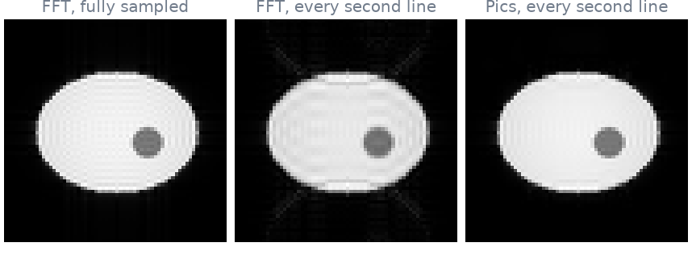

Note
Go to the end to download the full example code.
5. Your recon plugin#
In lesson 4 your plugin received the k-space of a slice and did nothing with
it. In this lesson it returns an image: first with a plain Fourier transform,
then with a compressed-sensing reconstruction from bartorch, the BART
toolbox in Python. Between the two only recon changes; the gadgets, the
trigger and the sorting stay the same, as the Gadgetron Online Class swaps
reconstruction engines behind one buffer.
Learning objectives
Return an image from
recon, and let pulserver write its header and DICOM.Remove the readout oversampling with a gadget pulserver ships.
See the aliasing of an undersampled scan, and remove it with
pics.Put the plugin in a file the scanner can load.
Previous: 4. What your recon receives. Next: 6. Test your pair on the virtual scanner, where your two plugins scan together.
Two series#
As in lesson 4, the virtual scanner records gre2d at 64 by 64 on a
four-coil phantom (the code is in the notebook). This time there are two
series, full and undersampled: one fully sampled, and one that
acquires every second line (Ry of 2) plus 24 calibration lines at the
centre of k-space, half the scan time.
A Fourier transform#
The plugin of lesson 4, with two changes.
A gadget pulserver ships,
RemoveReadoutOversampling, halves each readout as it arrives, so k-space reachesreconat the image’s 64 samples instead of 128. It crops with bartorch’sbartorch.remove_readout_oversampling().recontransforms each coil to an image, combines the coils as the root sum of squares, and returns it in aReconResult.
You return the pixels only. pulserver writes the rest of the image: its position, orientation and field of view from the sequence and the scanner, its series and slice numbers, and the DICOM the console receives.
import ismrmrd
import numpy as np
from pulserver import recon
from pulserver.mrd import AcquisitionFlag
class FFT(recon.ReconPlugin):
def __init__(self):
super().__init__(
gadgets=[recon.RemoveReadoutOversampling()],
triggers={"imaging": AcquisitionFlag.LAST_IN_SLICE},
)
def recon(self, context, branch, data): # noqa: ARG002
kspace = data.data.kspace # (coils, lines, samples)
coils = np.fft.fftshift(
np.fft.ifft2(np.fft.ifftshift(kspace, axes=(-2, -1))), axes=(-2, -1)
)
image = np.sqrt((np.abs(coils) ** 2).sum(axis=0))
return recon.ReconResult(image)
def reconstruct(plugin, series):
"""Run a plugin on a series and return the first image it emits."""
outputs = plugin.run(str(series), store=str(store))
images = [output for output in outputs if isinstance(output, ismrmrd.Image)]
return np.squeeze(images[0].data)
fft_full = reconstruct(FFT(), full)
fft_undersampled = reconstruct(FFT(), undersampled)
Compressed sensing with bartorch#
The undersampled series cannot be reconstructed by a Fourier transform:
half the lines are missing, and the image folds onto itself. pics,
BART’s parallel-imaging compressed-sensing solver, fills them in from the
coil sensitivities and a sparsity prior. In bartorch this takes two calls:
estimate the coil maps with ESPIRiT (ecalib) from the calibration lines,
then solve with a wavelet regularizer.
bartorch takes arrays in BART’s order, coils then z, y and x, so the
k-space of a 2D slice gets a z axis of length one, [:, None].
Only recon changes. Subclassing FFT keeps its gadget and trigger:
import bartorch.tools as bt
import torch
from bartorch import apps, priors
class Pics(FFT):
def recon(self, context, branch, data): # noqa: ARG002
kspace = torch.from_numpy(data.data.kspace)[:, None] # (coils, z, y, x)
maps = bt.ecalib(kspace, maps=1)
image = apps.pics(kspace, maps, regularizers=priors.Wavelet((-1, -2), 0.005))
return recon.ReconResult(image.abs().squeeze(0).numpy())
pics_undersampled = reconstruct(Pics(), undersampled)

The middle image shows what is left of the fold. Without the calibration
lines it would be a full copy of the phantom shifted by half the field of
view; with them, only its edges remain, as ripples and streaks across the
phantom. pics removes them from the same k-space.
The same buffer serves any engine: SigPy, a network, or your own code. The
plugin decides only what happens inside recon.
In a file#
On a scanner, a recon plugin is a .py file in a folder pulserver’s proxy
is pointed at. Next to the class, the file creates the plugin as
PLUGIN, which is what the proxy loads; the operator picks the
reconstruction by the file’s name, independently of the sequence.
# recon/my_pics.py
import torch
import bartorch.tools as bt
from bartorch import apps, priors
from pulserver import recon
from pulserver.mrd import AcquisitionFlag
class Pics(recon.ReconPlugin):
def __init__(self):
super().__init__(
gadgets=[recon.RemoveReadoutOversampling()],
triggers={"imaging": AcquisitionFlag.LAST_IN_SLICE},
)
def recon(self, context, branch, data):
kspace = torch.from_numpy(data.data.kspace)[:, None] # (coils, z, y, x)
maps = bt.ecalib(kspace, maps=1)
image = apps.pics(kspace, maps, regularizers=priors.Wavelet((-1, -2), 0.005))
return recon.ReconResult(image.abs().squeeze(0).numpy())
PLUGIN = Pics()
pulserver ships a pics plugin that does more: noise prewhitening,
partial Fourier and asymmetric echoes, coil maps shared across the slices of
an exam. It is the one you used in lesson 1.
As a spec#
What this lesson built, stated the way you would ask an agent for it:
Write a pulserver ReconPlugin for 2D Cartesian data that removes the
readout oversampling with recon.RemoveReadoutOversampling and is
triggered on LAST_IN_SLICE. Its recon estimates one set of coil maps
with bartorch.tools.ecalib and reconstructs with bartorch.apps.pics and
a wavelet regularizer of 0.005 over the two image axes, returning the
magnitude in a ReconResult. Save it as recon/my_pics.py with a
module-level PLUGIN. Compare it with a root-sum-of-squares FFT on a
gre2d series at Ry = 2 from the virtual scanner.
Total running time of the script: (0 minutes 0.832 seconds)